Matlab基础(四)符号计算
- MATLAB中，符号表达式有==符号函数==和==符号方程==两种
- 字符就是符号变量的值
- 符号表达式被表示为字符串或者字符串组
1.符号变量\表达式的定义 syms
符号变量通过命令syms定义，可同时定义多个
Matlab系统有默认的符号自变量,主要为：x,x1,y,y1,z,v,u,t,theta,alpha
1 | |
2.符号矩阵的运算
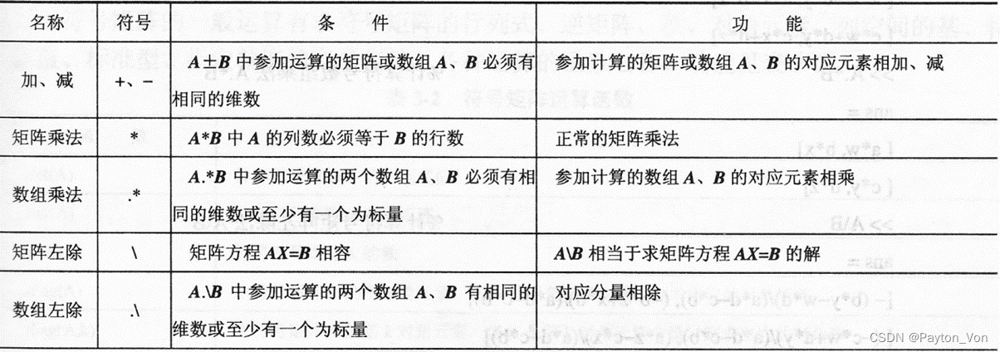
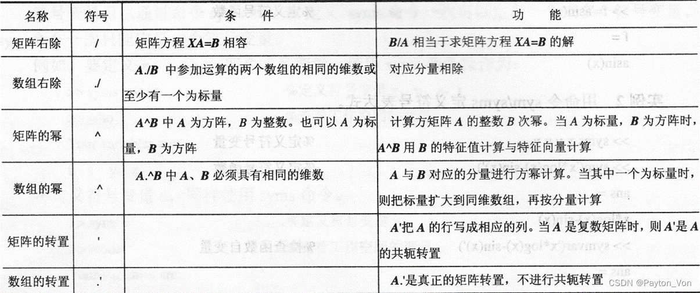
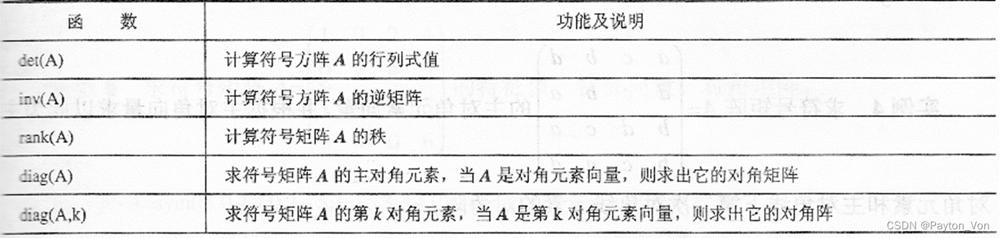
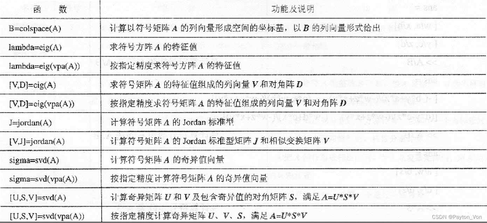
3.符号表达式运算
(1)基本运算
collect(S,v)—— 按指定变量v的次数对符号多项式S合并同类项
1 | |
1 | |
expand(S) —— 将符号表达式S展开
1 | |
factor(x) —— 将符号表达式x因式分解。
[N,D]=numden(A) % 求符号表达式A的分子N和分母D
simplify——对符号表达式S进行化简
size——求矩阵的维数
(2)符号变量的操作
symvar
C = symvar(expr)搜索表达式 expr，查找除 i、j、pi、inf、nan、eps 和公共函数之外的标识符。这些标识符是表达式中变量的名称。
subs(S,old,new)
用变量new替换符号表达式或者符号矩阵S中的变量old
1
2
3
4
>> syms a b
>> subs(a*b^2,a*b,5)
ans =
5*b
（已被淘汰）
- findsym(S):求符号表达式或符号矩阵S中的符号变量
(3)符号函数计算
conj(A)
求符号复数A的共轭复数
real(Z)——求符号复数的实部
imag(Z)—— 求符号复数的虚部
compose
compose(f,g)，求f=f(y),g=g(x)的复合函数f[g(x)]
当函数自变量不清晰时，可用:
compose(f,g,y,x) —— 指明f是变量y的函数，g是变量x的函数
compose(f,g,y,x,z) —— 将最终的复合函数自变量替换为z
1
2
3
4
5
6
7
8
9
>> f=a^3+b
f =
a^3 + b
>> g=2*x^3+sin(y)
g =
2*x^3 + sin(y)
>> compose(f,g,b,x,z)
ans =
a^3 + 2*z^3 + sin(y)
finverse
g=finverse(f)——求符号函数f的反函数g
g=finverse(f,v)——求符号函数f对指定自变量v的反函数g
(4)符号多项式
r=poly2sym(P,v):按指定变量v将数值系数向量p转化为符号变量多项式r
1 | |
4.符号微积分
（1）符号函数的极限
limit(F,x,a)——计算当x趋向于a时，符号表达式F的极限值；
limit(F,x,a,'right')——计算当x趋向于a时，符号表达式F的右极限值；
limit(F,x,a,'left')——计算当x趋向于a时，符号表达式F的左极限值；
注：极限用inf表示
1 | |
（2）符号函数的导数
diff(S,v,n):计算符号表达式S对自变量v的n阶导数。
（v,n可忽略）
例子：求二元函数
的两个一阶偏导数和三个二阶偏导数:
1 | |
（3）符号函数的积分
int(S,v)对符号表达式S中的指定变量v求S的不定积分
int(S,v,a,b)对符号表达式S中的指定变量v在区间[a,b]上，求S的定积分
例子：计算不定积分
1 | |
（4）级数求和与函数的级数展开
symsum(S,v,a,b)：对符号表达式S中的指定变量v从a到b求和。
例子：求和
1 | |
T = taylor（f，var，a）近似于 f，在点 var = a 处用 f 的泰勒级数展开。
1 | |
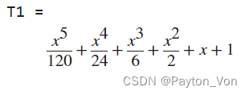
1 | |
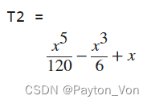
（默认展开5阶）
（5）符号函数求解
solve函数——方程和系统求解器
solve(eq,v)：对指定变量v求解方程eq的根。
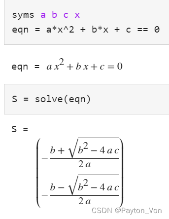
指定v时：
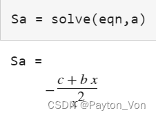
==solve函数也可以求解方程组与不等式。==
- 求解多个变量时，将输出存储在结构数组中比存储在单独的变量中更方便。
- 当您指定单个输出参数并且存在多个输出时，solve 函数将返回一个结构。
1 | |
例子：
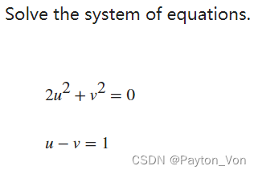
1 | |
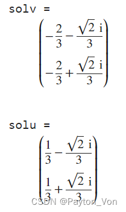
-
==解决高阶多项式方程==
解决高阶多项式方程时，solve函数可能返回含root的隐式解，尝试通过使用“MaxDegree”调用求解器来获得此类方程的显式解。该选项指定求解器尝试返回显式解的最大多项式次数。默认值为2。增加此值，您可以获得高阶多项式的显式解。
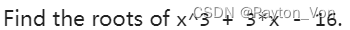1
2
3
4
5
6
7
8
9
10
11
12>> syms x
p = x^3 + 3*x - 16;
R = solve(p,x)
R =
root(z^3 + 3*z - 16, z, 1)
root(z^3 + 3*z - 16, z, 2)
root(z^3 + 3*z - 16, z, 3)
>> Rexplicit = solve(p,x,"MaxDegree",3)
Rexplicit =
(65^(1/2) + 8)^(1/3) - 1/(65^(1/2) + 8)^(1/3)
1/(2*(65^(1/2) + 8)^(1/3)) - (65^(1/2) + 8)^(1/3)/2 - (3^(1/2)*(1/(65^(1/2) + 8)^(1/3) + (65^(1/2) + 8)^(1/3))*1i)/2
1/(2*(65^(1/2) + 8)^(1/3)) - (65^(1/2) + 8)^(1/3)/2 + (3^(1/2)*(1/(65^(1/2) + 8)^(1/3) + (65^(1/2) + 8)^(1/3))*1i)/2
- ==solve函数可以求解不等式并返回满足不等式的解==。解决以下不等式
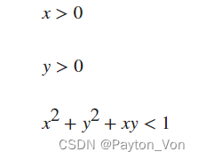
1 | |
fsolve函数——对非线性方程组求解
x = fsolve(fun,x0) 从 x0 开始，尝试求解方程 fun(x) = 0（全零数组）。
需要一个函数文件 root2d.m
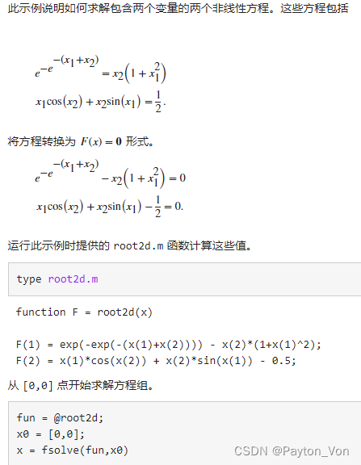
（6）符号积分变换
（学完信号与系统后补充）